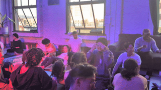

We are Whitney and Vicki, the co-organizers of MELT. MELT stands for Massage Exchange and Learning Together. We are a group of individuals who are passionate about healing justice and liberation.
We believe this work can take many forms -- we have so many dreams for the many shapes and configurations this can take, and we invite offerings, ideas, and collaborations from the community.
Bodywork and massage therapy is one way for us to care for our bodies and each other. These forms of care are often inaccessible to communities who need it most. MELT aims to:
You can read more about us here: bit.ly/meltabout
We often host our skillshares at Home Bass, a very cool community gift economy dance studio. Learn more about Home Bass here.
This is Whitney, our skillsharer for the evening.
This is Vicki, who is our co-facilitator (and videographer for the evening, so they won’t be featured in any more shots).
For this MELT, we will be working on the face -- on ourselves and on a partner. All our emotions are expressed through the face, whether it be a furrowed brow while working through a puzzle, a clenched jaw during tense moments, or a hearty laugh shared with a loved one.
Our facial muscles work hard to process our feelings, and giving them care is incredibly powerful. The first portion of our skillshare will be self-massage on the face, to get an understanding of both the sensitivity and resilience of these muscles. We will then move into working on a partner.
Our skillshares usually run ~2 hours, with ~1 hour for the potluck-jam at the end. This skillshare will run from 6pm - 9pm.
Most of our skillshares have ~35-40 attendees. Part of our vision is to build community, so to help folks settle into the space, we first invite the pairs of 2 to merge into pods of 4.
In these pods of 4, we invite folks to introduce themselves, share a stretch that the group can mirror, and answer a reflection question, such as:
Do you feel like your emotions are flowing through your face, or getting stuck in your face? Or a combination?
We’ve found that this exercise is a great way to get people into their bodies, feel more empowered to share their own offerings, and feel more connected to other attendees and the space container.
We love watching everyone exchange reflections and stretches!
Without active communication, the giver is often unsure of whether they are helping, and the receiver is often “bearing” a mediocre or even harmful massage, out of politeness. Communication is crucial in bodywork!
To practice:
This is often a silly and fun exercise, and we have found this to be a very effective way to warm folks up to active consent and communication during massage.
…is often a mix of anatomy explanations and massage demonstrations. Here, you can see Whitney instructing folks to explore different parts of their own face.
And here, Whitney is demonstrating massage techniques on Sophie.
Our facilitators often walk around to provide individual guidance (watching a demonstration is very different from trying it out with your own hands).
Halfway through each practice round, we invite the pairs to switch roles, so everyone can practice both giving and receiving. Practicing both giving and receiving is also important because one must receive in order to understand how their giving feels.
We usually aim for ~3 rounds of sharing and practice; each round takes about 30m.
We invite folks to stay, meet each other, continue practicing massage, and partake in food and snacks shared by the attendees themselves.
The jam portion offers a nice cool down space after a lot of learning, allows attendees to connect with each other, and hopes to provide a model for healing platonic touch during casual socializing.
The potluck allows folks to practice giving and receiving to the community in another way. And, everyone is usually hungry after all that massaging!
We often invite the attendees to help us caretake and clean up the space with us as well.
First, we are always open and excited to collaborate!
If you would like to collaborate or help, we would like to chat!
Here are some examples of reasons to hit us up…
Second, our skillshares are always free!
Whitney + Vicki <3